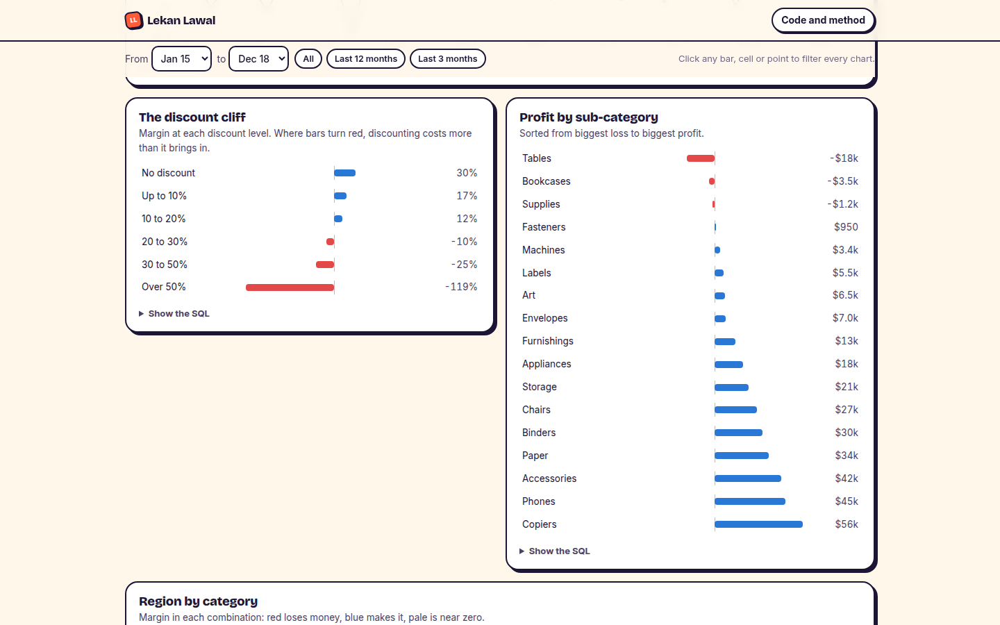
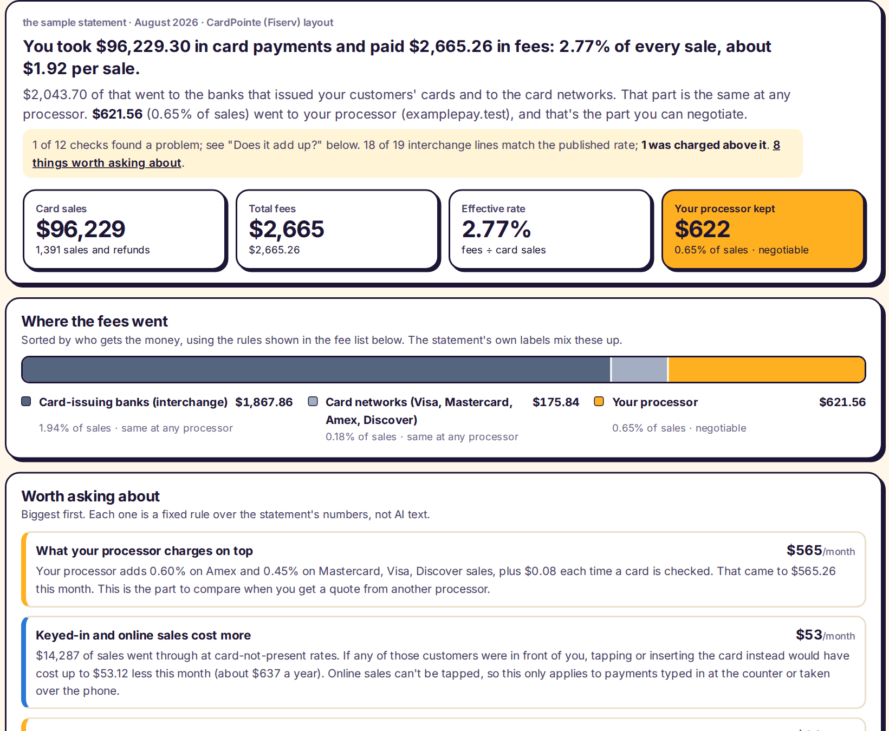

What it does
Picture a small online shop whose sales are up 30% this year while there's less money in the bank. The owner exports their orders from Shopify, drops the file in, and confirms which column is the date, the sales, the cost. A few seconds later they're looking at a dashboard of their own business: margin is falling even as sales grow, every discount over 25% loses money, and a handful of heavy products lose money on every sale because shipping costs more than they charge.
That's what this does, for any sales export: Shopify, Square, Clover, QuickBooks or a spreadsheet. It shows headline numbers against the previous period, the "discount cliff" where discounting starts costing more than it brings in, profit by category, a region by category grid, which products make most of the profit, and the ones that lose money. A short list of findings says it in plain English. Click any bar, cell or product and every chart filters to it.
Every chart shows its SQL
Under each chart, "Show the SQL" opens the exact query that produced it. The data runs through DuckDB, a real database, inside the visitor's browser, so nothing is uploaded and there's no server to pay for. For anyone hiring an analyst, it means the numbers aren't a black box: each one comes from a query you can read and check.

Built for messy real files
Real exports are messy, so the tool reports problems instead of quietly counting them. The sample is the Superstore dataset in its raw form, which ends with 806 rows from other sheets of the original workbook. The data check says so: 806 rows skipped, 1 exact duplicate removed, 9,993 lines used. Dates are read whether the file writes 03/04 for March 4 or April 3; costs can be per line or per unit; discounts a percentage or a dollar amount.
Testing with a Shopify-style file caught a real bug. The database guessed that "#" starts a comment line, and Shopify names every order "#1001", so an entire export would have disappeared. That file is now a permanent test.
The second check: card fees
The same shop owner also pays to take cards, usually 2.5% to 3.5% of sales. The monthly statement lists dozens of fees with codes like "VI NTWK ACQ PROC FEE" and labels that don't say who gets the money. Three different parties are paid out of it: the bank that issued the customer's card (interchange), the card networks like Visa and Mastercard, and the processor. Only the processor's share can be negotiated, and statements make it hard to see.
Drop the statement PDF into the second tab and the tool reads it in the browser. Before showing anything, it checks that the statement adds up: the daily sales and every fee line must match the statement's own totals to the cent, or it shows nothing. Then it sorts every fee by who gets it, using written rules on each line's description rather than the statement's labels, which mix them up. It compares each interchange line with the rate Visa, Mastercard or Amex publishes for that program, and recalculates every fee that prints its own arithmetic.

The result is a plain summary ("you paid 2.77% of every sale; $622 of it went to your processor, and that's the part you can negotiate") and a short list of things worth asking about, biggest first: a line billed above its published rate, a sale that fell to the most expensive "non-qualified" rate, a PCI non-compliance fee that usually disappears once a yearly form is filed, and how much keyed-in sales cost compared with tapping the card. A box lets the owner type in another processor's quote and see the difference. If both files cover the same month, each tab shows card fees as a share of that month's profit.
I tested it on a real business's statement, read only on my machine and never published: all 12 checks passed, all 75 fee lines and 28 interchange lines were read, and every one of the 25 interchange lines I had a published rate for matched it. Checking it showed my own first rules were wrong in one place: a Mastercard licence fee is printed like a processor markup ("DISC RATE TIMES"), and my rules counted it as one. The public sample is a made-up shop's statement in the same layout, with four problems planted on purpose; the tests check that each is found and nothing else is flagged.
How I know the numbers are right
The tests generate the same SQL the page runs, execute it in DuckDB on the raw file, and compare every result with a separate calculation in pandas: totals, the discount cliff, the Tables loss, the product ranking and the filters.
Limits
- Margins need a profit or cost column. Many point-of-sale exports don't have one; those files still get sales, discounts, products and locations, and the dashboard says why margins are missing.
- The card fee checker reads one statement layout so far: CardPointe, which Fiserv prints for many resellers. Square, Clover and Stripe each need a real statement to build against; until then, any statement gets a quick check from two numbers. Scanned statements have no text to read.
- Visa's rates come from Visa's own schedule. Mastercard doesn't publish its schedule openly, so its rates come from a published summary, and the page says so. It's a check, not financial advice.
- It shows what happened, not what would happen if prices changed. I left out "what if" simulators: without data on how customers react to prices, they'd present guesses as findings.
The first version of this project, a fixed dashboard of the Superstore data, is still available.